Cómo pasar de dibujar cada punto de venta a construirlo una vez, con toda su información.
Arq. David Volkmar Velez · Magíster en Bioclimática · Esp. Construcción Sostenible
Arquitecto · Magíster en Bioclimática · Esp. Construcción Sostenible
Coordinador BIM y docente universitario en Medellín
Portafolio: davidvolkmar.github.io/BIOBIM
Planos arquitectónicos, detalles constructivos y desarrollo inmobiliario.
Mobiliario y representación de algunos proyectos.
Espacios comerciales y puntos de venta para las diferentes marcas de la empresa.
¿Qué ventajas nos ofrece Revit según el tipo de proyecto que realizamos?
El problema es el número de sitios donde vive el mismo dato. Si uno queda sin corregir, el error llega a la obra.
El edificio, el local, la tienda: lo que se va a construir.
La parte que importa. Cada elemento guarda qué es, cuánto mide, de qué material es y quién lo suministra.
Se construye virtualmente antes de construir en sitio.
Haz clic en el muro, la vitrina, una góndola, la puerta, el piso o el ducto punteado.
Hay una representación precisa del local, no un dibujo por vista.
Se cambia el modelo y se actualizan vistas e información asociada.
Una góndola cambia de medida sin redibujarse.
El modelo es también una base de datos para construir.
Varias personas trabajan a la vez sobre un archivo central.
Rótulos, hojas, tablas, nomenclatura, capítulos de keynotes, estilos de línea y familias genéricas. Se mantiene una sola vez.
Pequeño, mediano y grande: cada marca arranca de una distribución ya resuelta y solo adapta el local real.
Mobiliario, señalética, materiales y claves propias de la marca. Lo demás lo hereda del tronco.
Marcas A, B y C son de ejemplo.
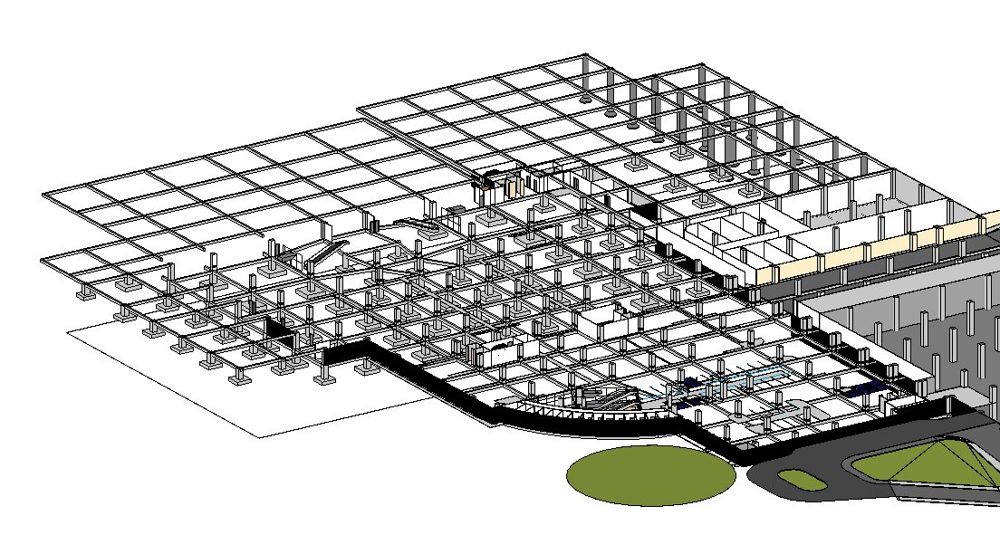
Estructura, etapas de vaciado y recorridos antes de la obra.
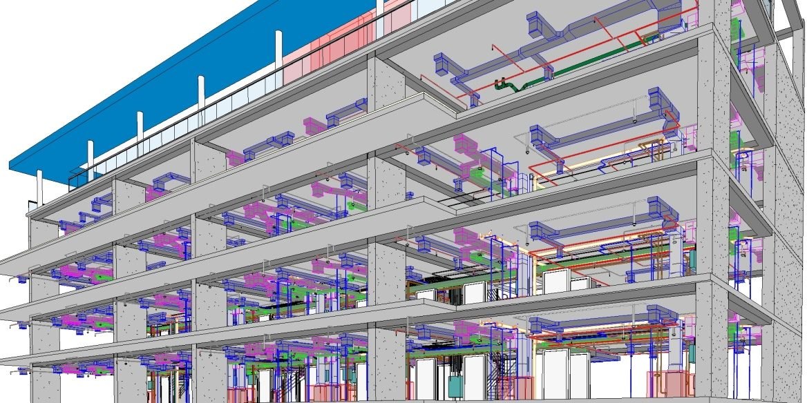
Instalaciones técnicas coordinadas y flujos 4D y 5D.
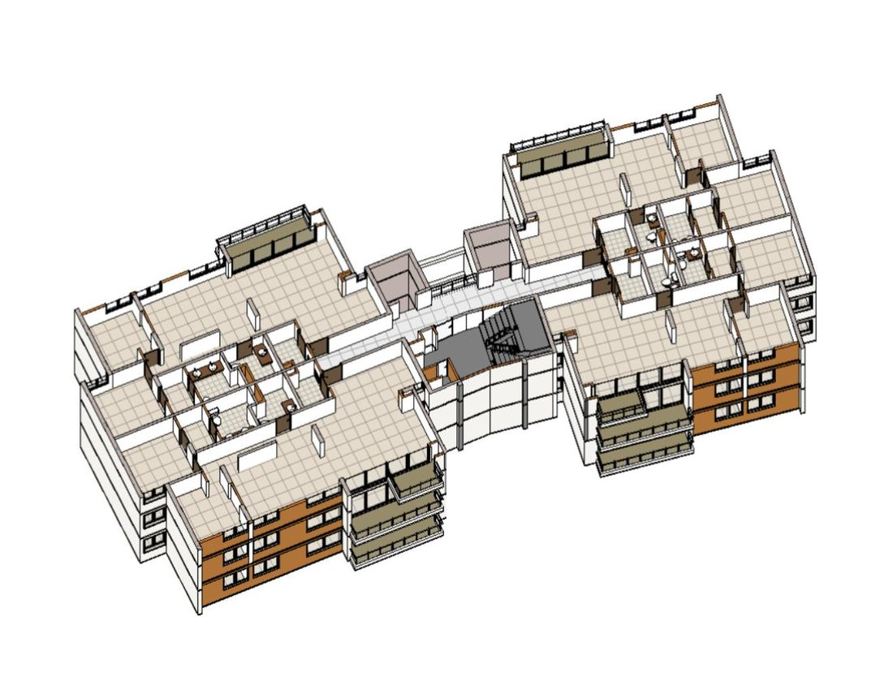
Cantidades de obra con trazabilidad y actualización automática.
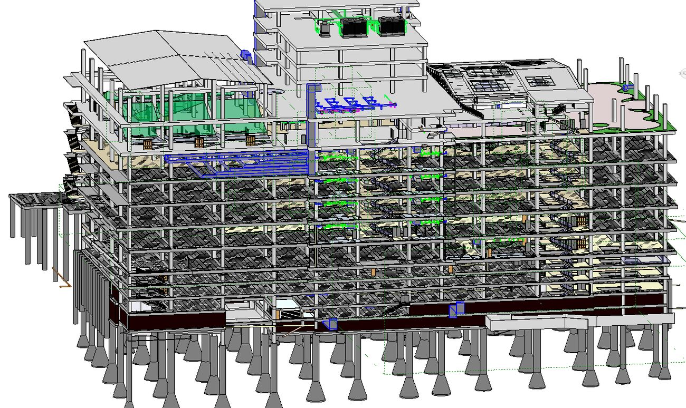
Disciplinas vinculadas y trabajo colaborativo en la nube.
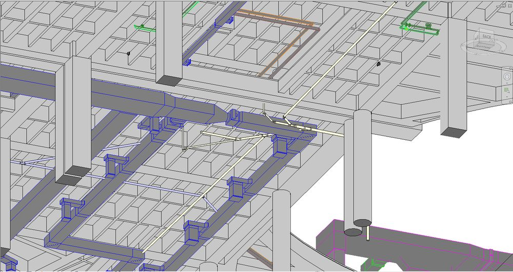
Antes: la red de desagüe cruza el aire acondicionado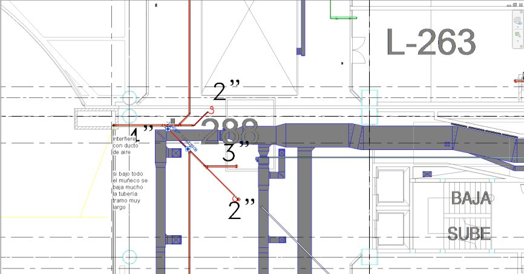
La nota de coordinación en el plano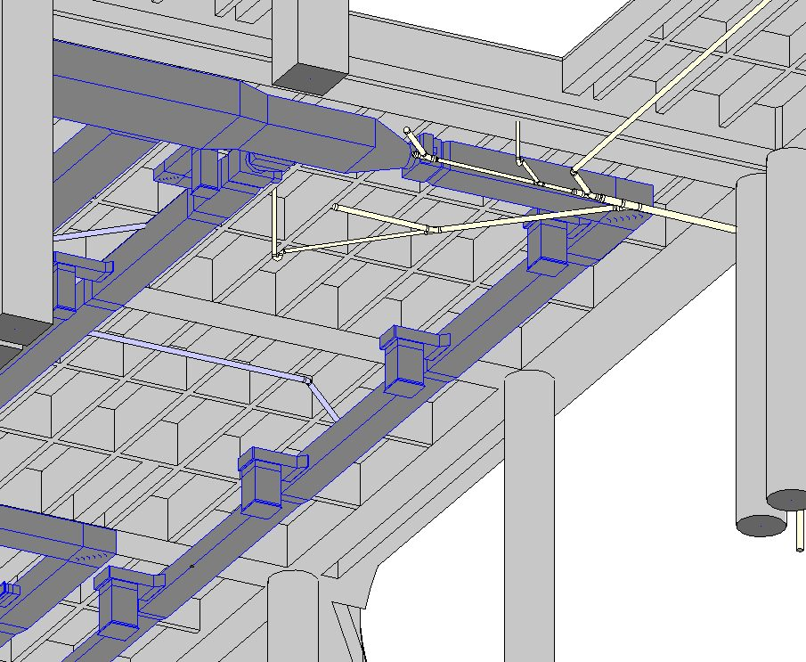
Después: rutas rediseñadas y recorridos más cortos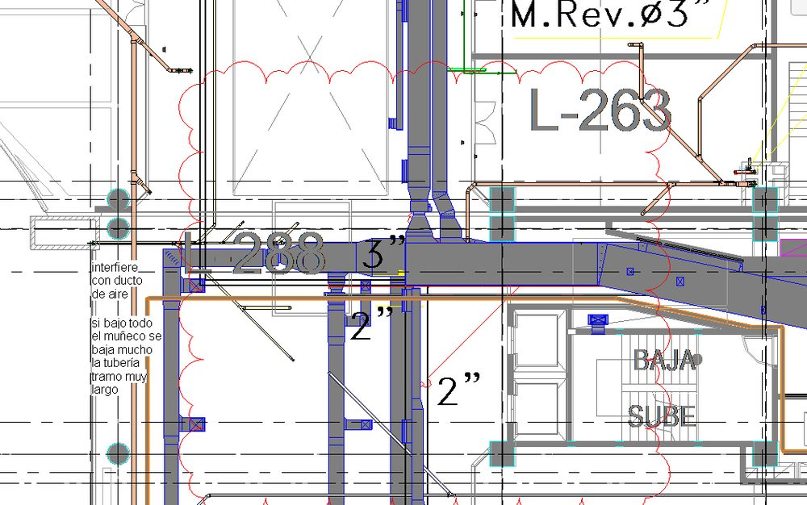
Se bajó la tubería conservando las pendientes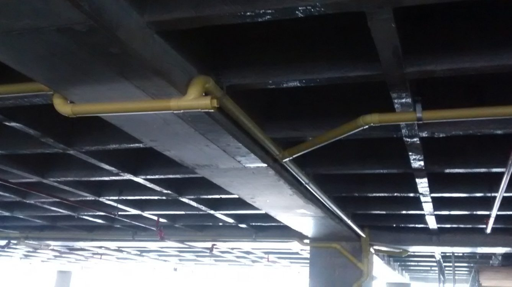
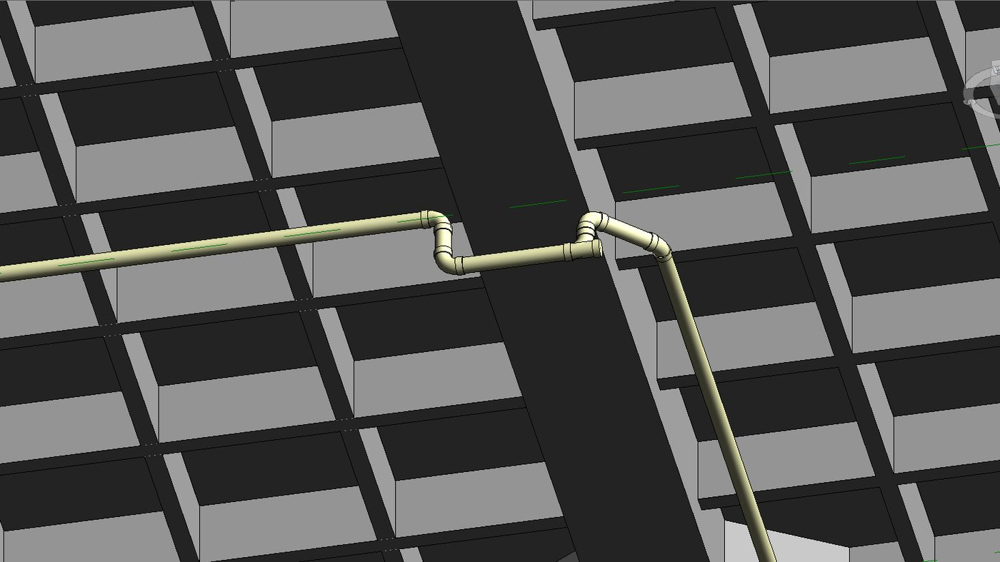
ModeloObra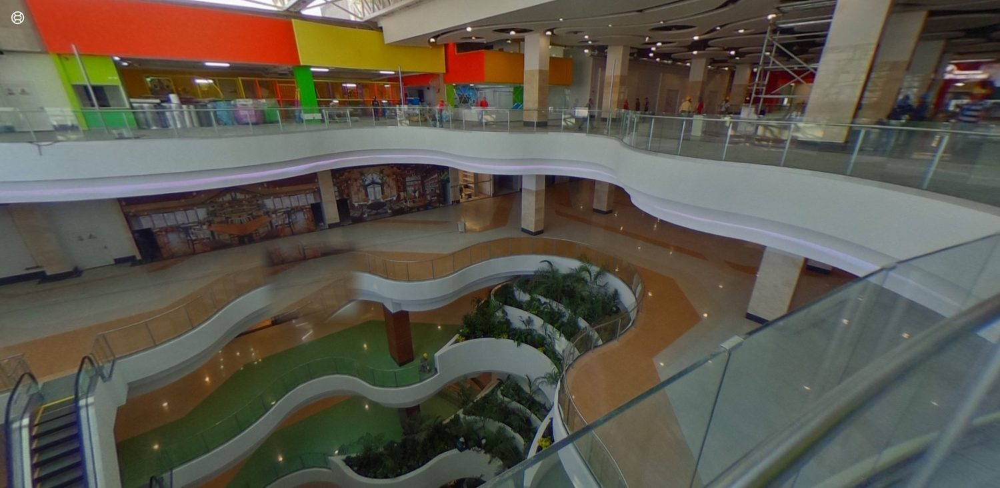
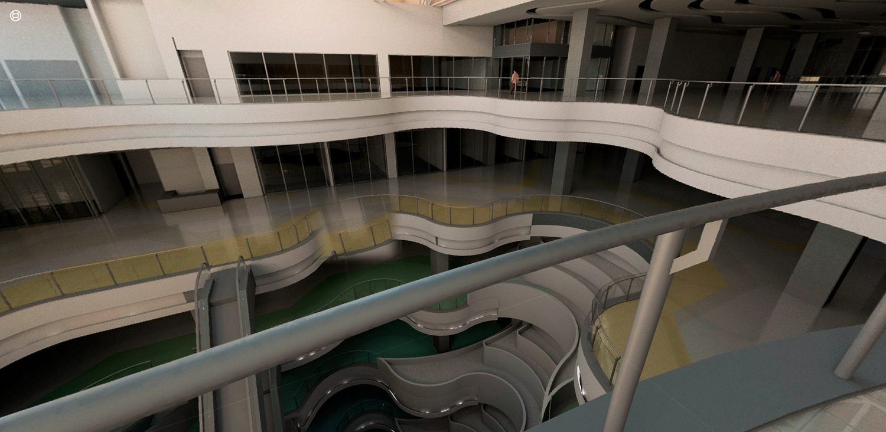
RenderObra finalAutodesk, 6 de noviembre de 2026. Lista EE. UU.: Revit LT US$560 al año. Confirmar con un distribuidor.
Orientación para discutir, no una regla. El valor LT es una referencia pública de la suite con AutoCAD LT y debe cotizarse.
Es un archivo de texto: clave, descripción y capítulo padre. Se edita en el Bloc de notas o se genera desde Excel.
La nota se escribe en cada plano. Si cambia, se busca en todos.
El material o el tipo lleva la clave. La etiqueta la lee sola.
Una sola fuente para plano, leyenda y especificación.
En Revit, el archivo de claves se recarga y el proyecto toma el texto nuevo. Claves de ejemplo.
Sigue siendo trabajo humano: decidir, anotar lo particular y revisar. Lo repetitivo deja de hacerse a mano.
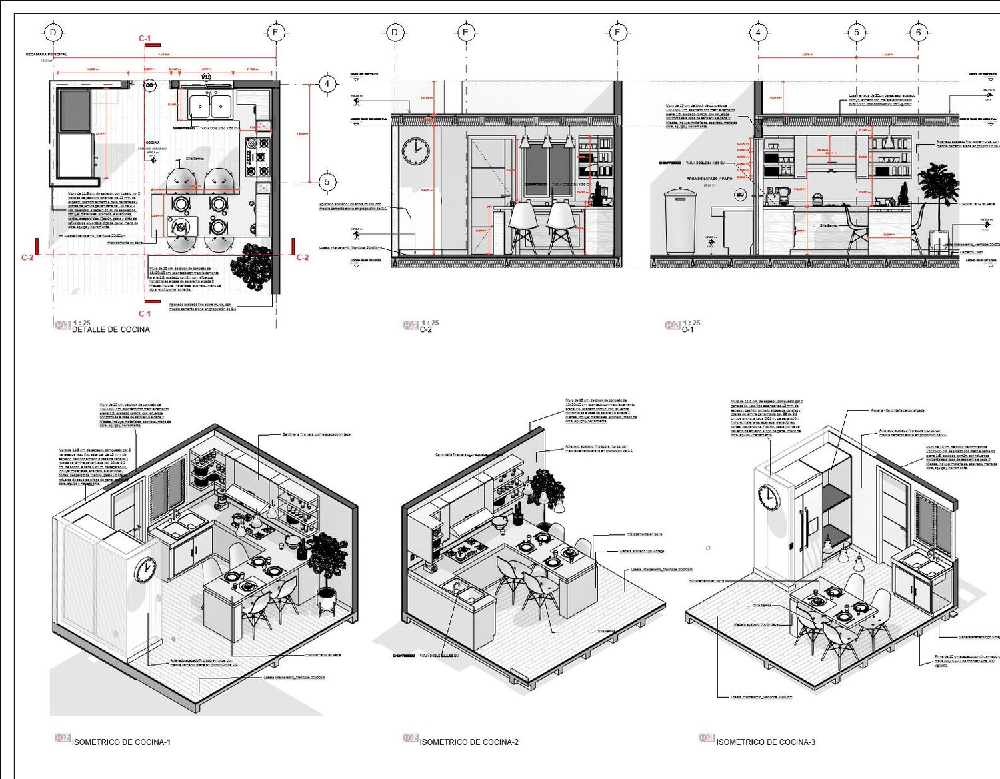
Plantas, alzados e isométricos del mismo modeloDefine prioridades y revisa sobre el modelo.
No necesita modelarDueño de plantilla, estándar y control de calidad.
Revit completoLleva cada proyecto y cruza con externos.
Revit completoHace el local y emite los planos.
Revit o LTCrea y cuida familias de mobiliario por marca.
Revit o LTTrabajo compartido: varias personas sobre un modelo central, en servidor o en la nube.
Vínculos: arquitectura, estructura e instalaciones se ven juntas sin mezclarse.
DWG, PDF e IFC para quien no trabaja en Revit. Se puede empezar sin que nadie más cambie.
Lo que se aprende en una tienda vuelve a la plantilla. Así cada proyecto deja la oficina mejor que antes.
Proyectos tipo, planos y detalles que se repiten.
Nomenclatura, capítulos, roles y documentos.
Primera versión con una sola marca.
Por perfil: dirección, modelado, liderazgo BIM.
Una tienda real con acompañamiento.
Más marcas y menos CAD en documentación.
| Riesgo | Cómo se maneja |
|---|---|
| Bajón de productividad al inicio | Empezar con una tienda sin urgencia y una sola marca. |
| La plantilla no tiene dueño | Un líder BIM con tiempo asignado y control de versiones. |
| Modelar de más | Definir qué nivel de detalle pide cada entrega. |
| Familias pesadas o descargadas de internet | Biblioteca propia y revisada. Lo que no pasa revisión no entra. |
| Contratistas que siguen en CAD | Se les sigue entregando PDF y DWG. Nadie afuera tiene que cambiar. |
| Resistencia del equipo | Formar primero a quienes tienen curiosidad y mostrar resultados propios. |
Para empezar: LOD 300 en los planos, 350 solo donde el mueble se cruza con instalaciones, y el 400 lo hace el taller.
→ avanzar ← volver F pantalla completa N notas del orador G índice B pantalla negra Esc cerrar